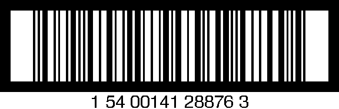

ITF-14
Example

Structure
The configuration for the default implementation is:
<barcode>
<itf-14>
<height>{length:32mm}</height>
<module-width>{length:1.106mm}</module-width>
<wide-factor>{number:2.5}</wide-factor>
<quiet-zone enabled="{boolean:true}">{length:10mw}</quiet-zone>
<checksum>{checksum-mode:auto}</checksum>
<bearer-bar-width>{length:4.8mm}</bearer-bar-width>
<bearer-box>{boolean:true}</bearer-box>
<human-readable>
<placement>{human-readable-placement:bottom}</placement>
<font-name>{font-name:Helvetica}</font-name>
<font-size>{length:8pt}</font-size>
<display-checksum>{boolean:true}</display-checksum>
</human-readable>
</itf-14>
</barcode>
Notes
- Since ITF-14 is basically an enhanced Interleaved 2 of 5, the notes from that symbol also apply to a certain degree.
- The default values for ITF-14 shown above represent the nominal size as found in the GS-1 specification.
- Quiet zones must be at least 10 times the module width.
- The "bearer-bar-width" setting controls the thickness of the bearer bar around the symbol.
- The "bearer-box" setting controls whether a bearer box is drawn (true) or if only the top and bottom bearer bars are generated (false).
Message format
- Valid characters are 0-9.
- The normal message length for ITF-14 is 14 digits (including the check digit). If the checksum mode is set to "auto", Barcode4J automatically adds the checksum if the message length is 13 digits. If the message length is 14 digits the checksum is verified. If the message is not exactly 13 or 14 digits (depending on your checksum mode setting) you will get an error.